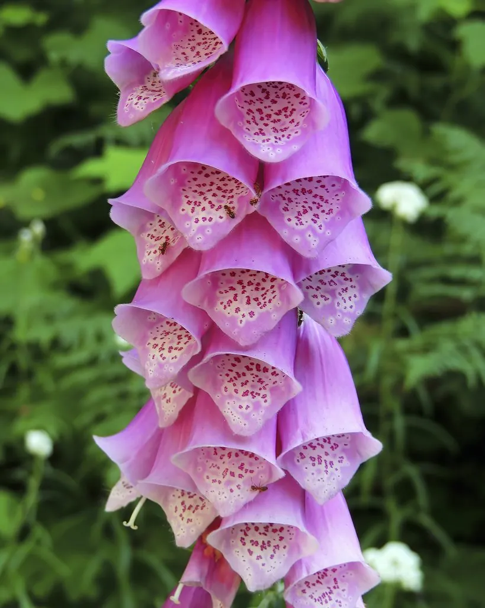

花卉与草本 · 植物界
毛地黄 Digitalis purpurea

车前科二年生草本，钟形花冠紫红下垂如串铃，是提取强心苷的药用植物，全株有毒，原产欧洲西部。
- 分类
- 门被子植物门纲木兰纲目唇形目科车前科属毛地黄属
- 栖息环境
- 欧洲西部的林缘、荒地与石墙边，喜凉爽、半阴、湿润
- 地理分布
- 原产欧洲西部，现世界温带地区栽培或归化，中国庭园有引种
- 保护级别
- 暂无评估
物种志
毛地黄为车前科毛地黄属二年生或多年生草本，株高 0.6–1.5 米，茎直立，全株被灰白色短毛。叶片基生呈莲座状，卵形至长椭圆形，叶面皱褶。总状花序顶生，花冠钟形、下垂，长 4–5 厘米，紫红、粉或白色，喉部常有斑点，花期 5–7 月；果实为蒴果。
毛地黄原产欧洲西部，喜凉爽、半阴和湿润的环境，常见于林缘、荒地和石墙边，靠种子繁殖，常成片生长。它是重要的药用植物，叶片含洋地黄毒苷等强心苷，可用于提取治疗心力衰竭的药物，但全株剧毒，剂量极难掌握，必须由专业人员使用，普通人切勿采食或自行入药。毛地黄花形如垂挂的铃铛，英文名意为“狐狸手套”，也是花境中富有野趣的竖线条花卉。
形态与习性
- 株高0.6–1.5 米，全株被短毛
- 花期5–7 月，钟形花下垂
- 果期花后结蒴果
- 光照喜半阴，也耐散射光
- 水分喜湿润，忌干旱
- 土壤肥沃、富含腐殖质的微酸性土壤
- 繁殖以播种为主
- 主要用途花境观赏、提取强心苷类药物
趣味知识
- 毛地黄是提取洋地黄毒苷等强心苷的药用植物，但全株剧毒。
- 它的钟形花冠下垂如串铃，英文名意为“狐狸手套”。
- 毛地黄叶片含强心苷，剂量极难掌握，必须由专业人员使用。
- 欧洲野外常见毛地黄成片生长在林缘和石墙边，是典型的高大野生花卉。